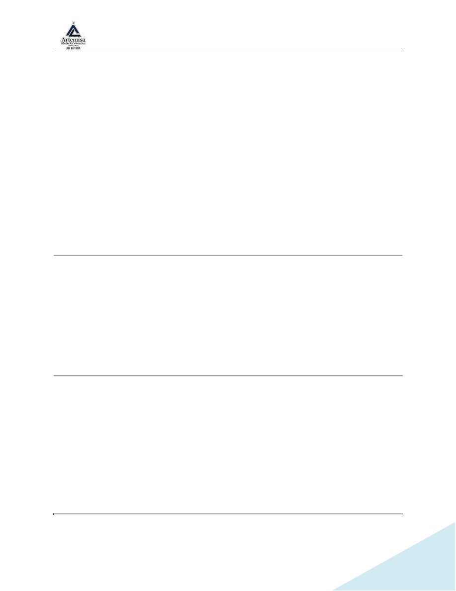

SOP DE USO SEGURO DE LA SIERRA DE PENDULO
Revisión 1.0
Page 1 of 8
SOP – SOP DE USO SEGURO DE LA SIERRA DE PENDULO
Sierra de Péndulo (Ingletadora) DeWalt`
1. Nombre del Procedimiento
SOP-MAQ-02 – SOP DE USO SEGURO DE LA SIERRA DE PENDULO
2. Objetivo
Establecer el procedimiento seguro para la operación, inspección y mantenimiento
preventivo de la DeWalt Miter Saw con el fin de evitar accidentes, garantizar cortes
precisos y prolongar la vida útil del equipo.
3. Alcance
Todos los trabajadores de la empresa deben respetar las Normas de Seguridad
Industrial, especialmente las referidas al uso de herramientas y maquinarias con alto
nivel de riesgo para la salud e incluso la vida de las personas.
Los operarios y ayudantes capacitados y autorizados a utilizar la sierra deberan
cumplir las disposiciones del presente SOP.
4. Equipo de Protección Personal (Epp) Obligatorio
Antes de operar la sierra, el trabajador debe utilizar:
•
Lentes de seguridad
•
Protectores auditivos
•
Guantes de trabajo (solo para manipular material, no durante el corte si
interfieren con el control)
•
Mascarilla o respirador para polvo
•
Calzado de seguridad